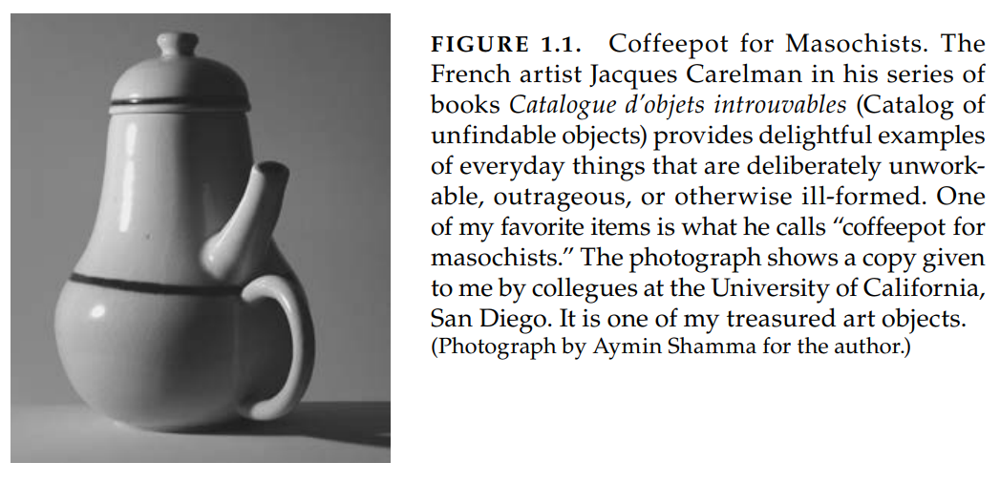
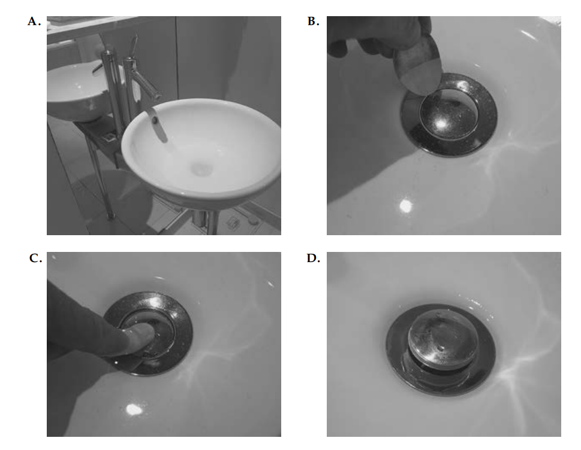
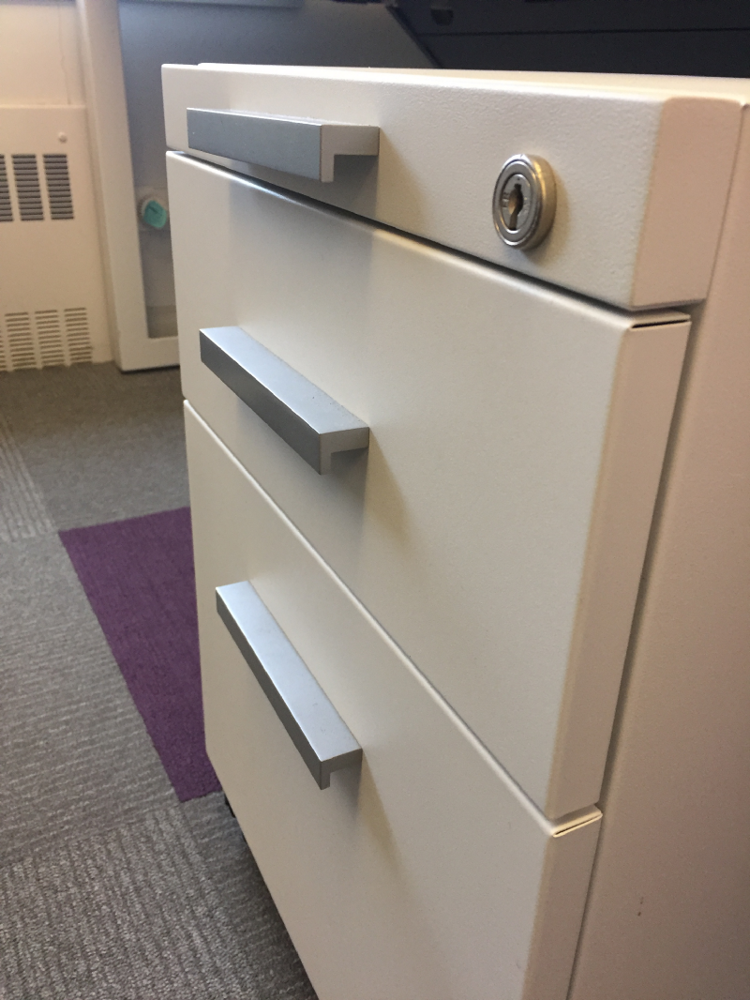
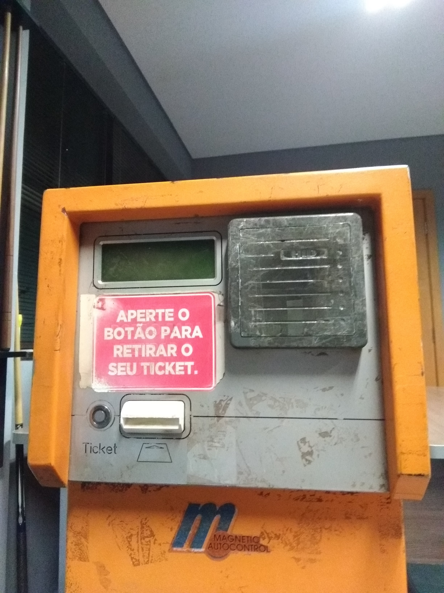
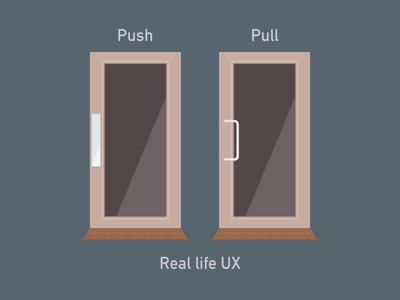

Aula 7 (2019-05-09)
Design (Projeto)
Bom design é muito mais difícil de perceber do que um design ruim. Bom design supre nossas necessidades tão bem que eles são invisível, servindo-nos sem a necessidade de chamar atenção para ele.
Design ruim mostra de maneira muita clara suas inadequações/insuficiências, fazendo com que ele seja muito notado.
Logo, bom design é um trabalho que deve ser de forma geral "invisível".
Design ruim
- Empurar portas que devem ser puxadas;
- Puxar portas que deveriam ser ser empurradas;
- Tentar entrar em portas que nem devem ser puxadas ou empurradas, mas sim deslizadas.
Quando isso acontece com muitas pessoas principalmente, isso é um problema.
- Norman doors: https://www.youtube.com/watch?v=q7CpRH2WbME.
O design de portas deveriam indicar como elas funcionam sem nenhuma necessidade de indicar sinais, e sem qualquer necessidade de tentativa e erro.





Abastacimento de carros:
https://www.youtube.com/watch?v=vupgBykQnko
Good design
Duas características de bom design são descoberta (discoverability) e entendimento (understanding):
-
Descoberta: é possível descobrir quais ações são possíveis e como executá-las?
-
Entendimento: o que tudo isso significa? como o produto deveria ser usado? o que todos os diferentes controles e configurações significam?
Com dispositivos complexos, descoberta e entendimento precisam o auxilio de manuais, ou assistentes pessoais. Mas isso não deveria ser usado para coisas simples.
Design é preocupado com como as coisas funcionam, como elas são controladas e a natureza dessas interações entre pessoas e tecnologia. Quando feita bem, os resultados são ótimos. Quando feito mal, o produto pode se tornar inútil, que pode levar a frustração e irritação do usuário. Ou eles são úteis, mas nos forçam a usá-los de uma forma que o produto quer, e não do jeito que nós queremos.
Isso deve ser revertido: colocando a culpa nos dispositivos e em seu design. É culpa da máquina e seu projeto (design). É dever deles entender como as pessoas são. Não é dever das pessoas entender os produtos, principalmente os mal projetados.
Engenheiros erram ao tentar explicações lógicas:
- "Se as pessoas lessem as instruções tudo estaria resolvido";
Engenheiros são treinados para pensar de forma muito lógica. Dessa forma eles pensam que todos devem pensar do mesmo jeito que eles! Criando produtos da mesma forma. Quando as pessoas usam os produtos da forma errada, eles colocam culpa na pessoa. Porém deveria-se aceitar o comportamento humano do jeito que ele é, não do jeito que nós queriamos que ele fosse.
A moral é simples: nós desenvolvemos coisas para pessoas, logo temos que entender ambos, tecnologia e pessoas.
É um passo difícil para muitos engenheiros: máquinas são muito lógicas e ordenadas. Se não tivessmos pessoas, tudo funcionariam melhor!
Porém elas existem, então temos que lidar com uma interdisciplinaridade entre tecnologia e psicologia (pessoas), os designers deveria entender ambos. E também projetar nossas máquinas pensando que pessoas cometem erros.

Design centrado no humano (Human-Centered Design)
Pessoas são frustadas com as coisas do dia a dia... dashboards complicados, aumento da automação residencial, jogos, cozinha automatizada com novas interfaces, etc.
E cada novo desenvolvimento parece repetir os erros dos antigos; cada novo campo demora tempo para adotar princípios de bom design. Assim como nossa área de sistemas multi e hipermídia.
Cada nova invenção tecnológica ou técnica de interação precisa de experimentanção, e o estudo dos princípios de bom design podem ser integrados e colocado em prática.
Uma solução é o design centrado no humano (HCD -- em inglês), uma abordagem que coloca as necessidades, habilidades e modos de se comportar das pessoas no design. Isso indica um entendimento de psicologia e tecnologia. Boa comunicação especialmente de máquina para pessoa, indicam quais ações são possíveis, o que está acontecendo e o que está para acontecer, isso leva ao bom design.
Designers precisam focar suas atenção nos casos onde as coisas dão erradas, não apenas onde as coisas dão certas. E se der errado, isso deve ser destacado de maneira apropriada para o usuário tomar as devidas ações e o problema ser resolvido. Quando isso acontece de forma suave, a colaboração entre pessoa e dispositivo é excelente.
HCD significa bom entendimento de pessoas e a necessidade que o design se propões a satisfazer. Esse entendimento primeiramente vem da observação, pois pessoas geralmente não sabem das suas reais necessidade, até nem sabem das dificuldades que elas encontram.
Os princípios de HCD evitam especificar o problema, para que durante iterações o problema seja especificado de forma aproximada. Isso é feito por testes rápidos de ideias, e depois de cada teste as abordagens mudam e também a definição do problema. Ou seja, um método iterativo incremental! Os resultados podem ser produtos que realmente satisfaçam as necessidades das pessoas.
Agradecimentos
Fabrício de Moraes - UX Designer / User Interface Designer
Referências
Livro: The Design of Everyday Things (Cap1)